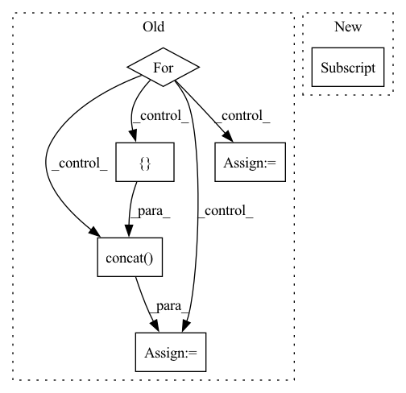

Pattern ID :22583
Before Change
all_files = glob.glob(f"{sub_dir}/*.csv")
df = pd.DataFrame()
for fpath in all_files:
f_df = pd.read_csv(fpath, index_col="Date Time",
encoding="unicode_escape", na_values=-9999)
f_df.index = pd.DatetimeIndex(f_df.index)
df = pd.concat([ df, f_df) // todo, such concatenation is slow.
df = df.sort_index()
After Change
assert isinstance(en, int)
return df.iloc[st:en]
elif st is not None:
return df.loc[st:en]
return df
def _read_as_df(self)->pd.DataFrame:In pattern: SUPERPATTERN
Frequency: 4
Non-data size: 6
Instances Fragment ID: 71382465
Project Name: atrcheema/ai4water
Commit Name: 40a6dd9ce37500119adb2b855a3f287633b5fcf3
Time: 2022-06-15
Author: ather_abbas786@yahoo.com
File Name: ai4water/datasets/datasets.py
M Class Name: WeatherJena
N Class Name: WeatherJena
M Method Name: fetch(3)
N Method Name: fetch(3)
M Parent Class: Datasets
N Parent Class: Datasets
M File Name: ai4water/datasets/datasets.py
N File Name: ai4water/datasets/datasets.py
M Start Line: 528
M End Line: 572
N Start Line: 557
N End Line: 604
Before Change
if static_attributes is not None:
static = self._read_static(stations, static_attributes, st, en, as_ts=as_ts)
for k, v in stns.items():
if as_ts:
stns[k] = pd.concat([ stns[k], static[k], axis=1)
else:
stns[k] = {"dynamic": stns[k], "static": static[k]}
elif static_attributes is not None:
return self._read_static(stations, static_attributes, st, en, as_ts=as_ts)After Change
dyn[stn] = stn_df[st:en]
else:
dyn = xr.load_dataset(self.dyn_fname) // daataset
dyn = dyn[stations] .sel(dynamic_features=dynamic_attributes, time=slice(st, en))
if as_dataframe:
dyn = dyn.to_dataframe(["time", "dynamic_features"])
Fragment ID: 71382467
Project Name: atrcheema/ai4water
Commit Name: 518f536a9edfbd2de387303c829d38a8757ee33e
Time: 2021-06-15
Author: ather_abbas786@yahoo.com
File Name: AI4Water/utils/datasets/camels.py
M Class Name: CAMELS_CL
N Class Name: CAMELS_CL
M Method Name: fetch_stations_attributes(7)
N Method Name: fetch_stations_attributes(7)
M Parent Class: Camels
N Parent Class: Camels
M File Name: AI4Water/utils/datasets/camels.py
N File Name: AI4Water/utils/datasets/camels.py
M Start Line: 1282
M End Line: 1324
N Start Line: 1476
N End Line: 1526
Before Change
all_files = glob.glob(f"{sub_dir}/*.csv")
df = pd.DataFrame()
for fpath in all_files:
f_df = pd.read_csv(fpath, index_col="Date Time",
encoding="unicode_escape", na_values=-9999)
f_df.index = pd.DatetimeIndex(f_df.index)
df = pd.concat([ df, f_df) // todo, such concatenation is slow.
df = df.sort_index()
After Change
assert isinstance(en, int)
return df.iloc[st:en]
elif st is not None:
return df.loc[st:en]
return df
def _read_as_df(self)->pd.DataFrame: Fragment ID: 71382459
Project Name: atrcheema/dl4seq
Commit Name: 40a6dd9ce37500119adb2b855a3f287633b5fcf3
Time: 2022-06-15
Author: ather_abbas786@yahoo.com
File Name: ai4water/datasets/datasets.py
M Class Name: WeatherJena
N Class Name: WeatherJena
M Method Name: fetch(3)
N Method Name: fetch(3)
M Parent Class: Datasets
N Parent Class: Datasets
M File Name: ai4water/datasets/datasets.py
N File Name: ai4water/datasets/datasets.py
M Start Line: 528
M End Line: 572
N Start Line: 557
N End Line: 604